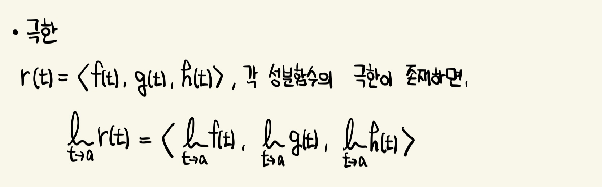
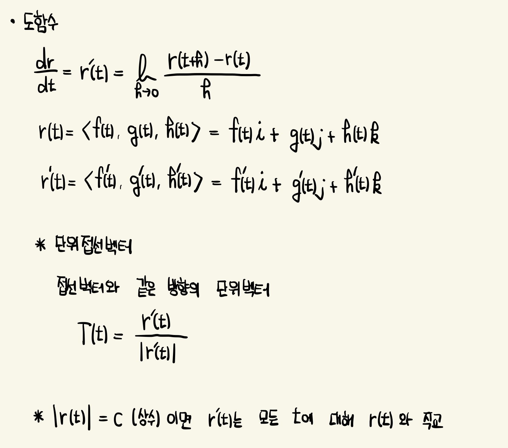
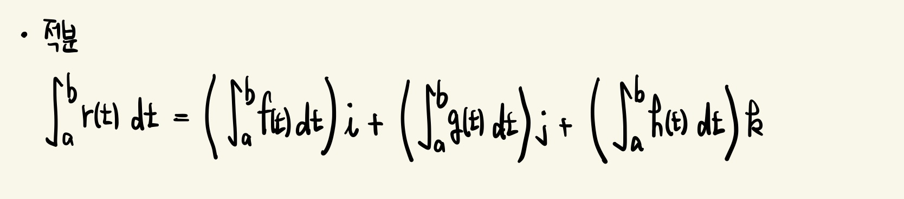
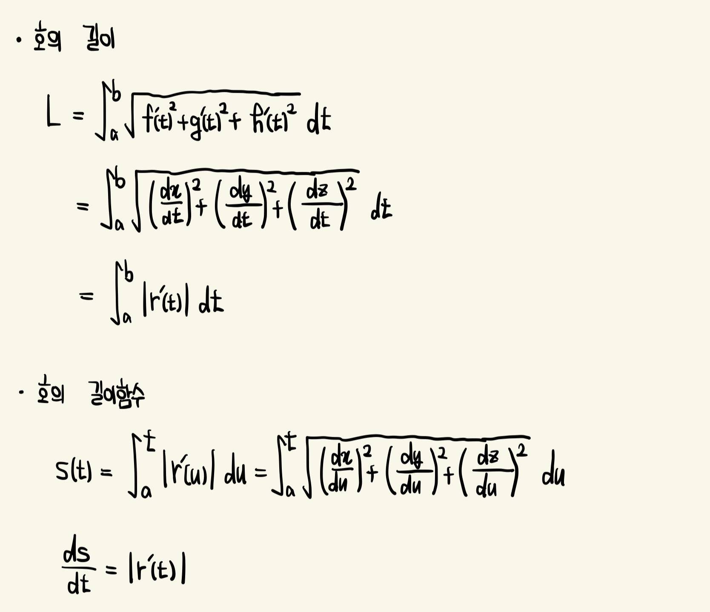
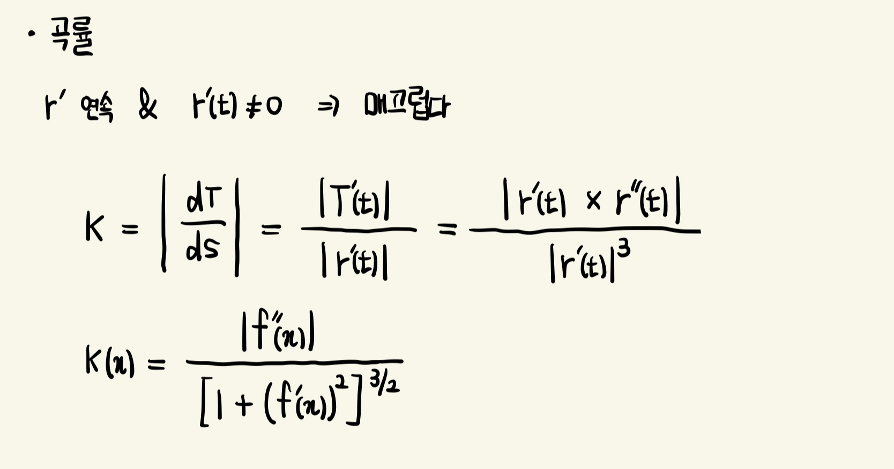
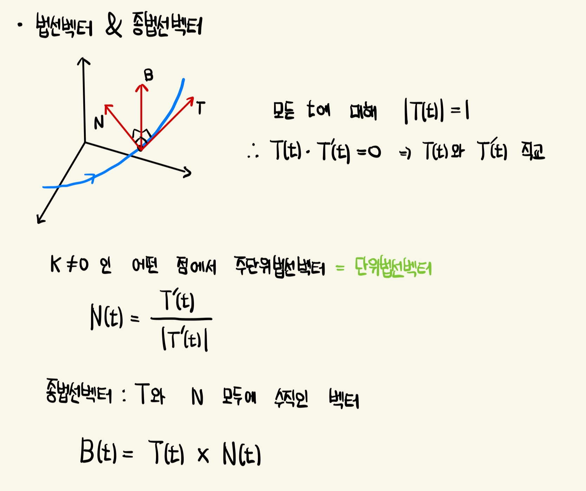
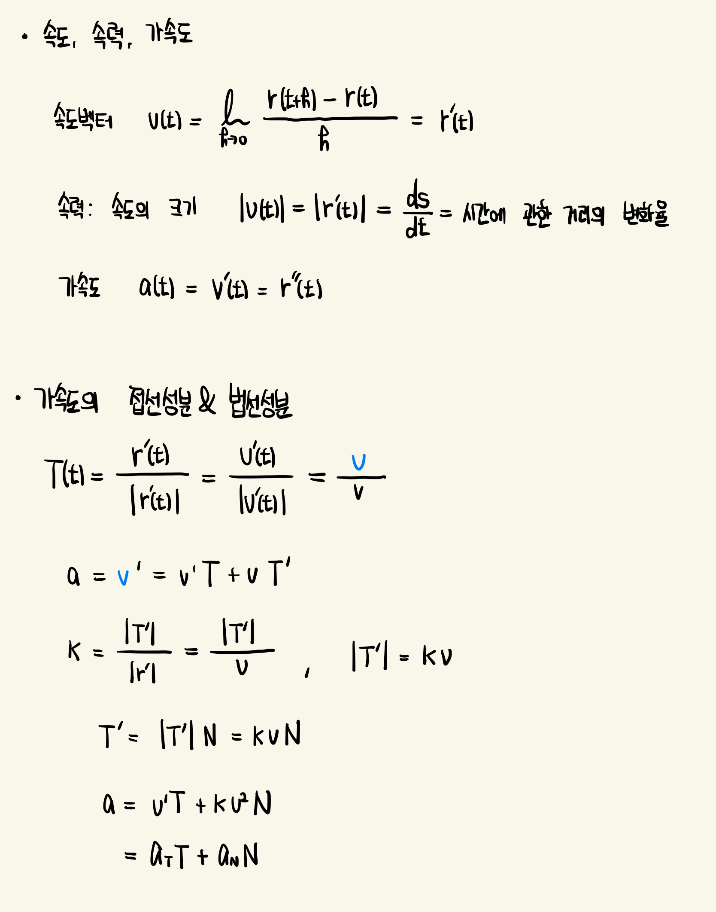

극한

도함수, 미분

- 한 곡선이 구면 위에 놓여 있으면, 접선벡터는 언제나 위치벡터에 수직
적분

기하적 성질 (호의 길이, 곡률, 비틀림률)은 매개변수화에 의존하지 않음
호의 길이

곡률
단위접선벡터(T)는 곡선의 방향을 나타냄
곡률은 호의 길이에 대한 단위접선벡터의 변화율의 크기로 정의됨
단위접선벡터의 길이가 일정하기 때문에 방향의 변화만 T의 변화율에 영향을 미침

+ 반지름이 a인 원의 곡률은 1/a : 작은 원이 큰 곡률을 가지고, 큰 원이 작은 곡률을 가짐
+ 직선의 곡률은 접선벡터가 일정하므로 언제나 0
법선벡터 & 종법선벡터 (Principal unit normal Vector & Binormal Vector)


* 마지막 공식의 의미
종법선벡터 B가 없으므로, 물체가 공간에서 어떻게 움직이든 가속도는 항상 T와 N이 만드는 평면에 놓임 (T는 운동의 방향, N은 곡선이 구부러지는 방향을 제시)